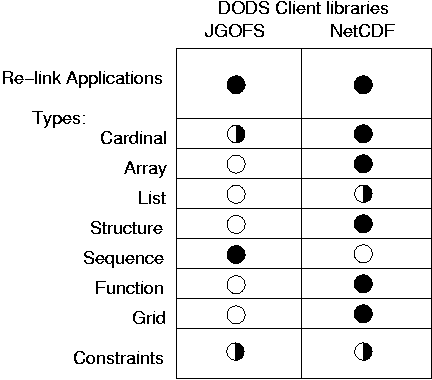

Client libraries released by URI/MIT:

The URI/MIT DODS group will complete the core DODS software used to
build servers and client-libraries and complete development of two existing
client-libraries.
Previous
Next
James Gallagher
jimg@dcz.gso.uri.edu